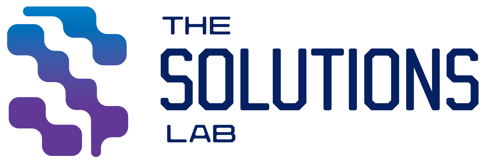

Research Experience
Exploring biomedical engineering, microfluidics, implantable devices, and healthcare technologies through interdisciplinary research.
Microfluidic Device Design for Syncytial Knot Isolation
Academic Lab Initiative
Objective
Led the development of a deterministic lateral displacement (DLD) microfluidic device for the isolation of placental syncytial knots. The project focused on improving separation efficiency while reducing the time required for manual isolation procedures.

Methodology & Setup
Responsibilities included CAD design, COMSOL simulations, device optimization, fabrication planning, and experimental testing using microspheres as biological surrogates.
❤️ Rogers Lab | TAVI Integrated Pacemaker
Implantable Bio-Electronics
Objective
Develop a wireless battery-free pacemaker integrated into transcatheter aortic valve replacement (TAVI) procedures to reduce complications following valve implantation.

My Contributions & Technical Skills
- Fabricated prototype components: PCB Soldering
- Built and tested RF coils: Electronics
- Performed flow-loop testing: Mechanical Testing
- Tuned impedance for wireless power transfer: RF Systems
- Assisted with prototype manufacturing: Medical Devices
Current Focus
- Prototype optimization
- Flow testing
- Manufacturing processes
🚶 Solutions Lab | Wearable Gait Monitoring
Biomechanics & Sensing Systems
Objective
Develop wearable sensing systems that analyze gait using force sensors and IMUs to better understand human movement and improve healthcare monitoring.

My Contributions & Technical Skills
- Integrated IMU and FSR sensors: Embedded Systems
- Developed Python analysis pipelines: Python
- Processed motion datasets: Signal Processing
- Visualized walking trials: Data Analysis
- Managed participant testing: Experimental Design
Current Focus
- Improving gait analysis algorithms
- Expanding sensor validation
- Automating data processing